Шаг 1: подготавливаем картофель, свеклу и морковь.
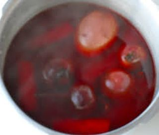
Воспользовавшись кухонной щеткой, тщательно промываем картофель, свеклу и морковь под проточной теплой водой, чтобы удалить всю грязь и землю. Затем выкладываем овощи в среднюю кастрюлю и полностью заливаем обычной холодной жидкостью из-под крана так, чтобы она не меньше, чем на 2–3 пальца, покрывала компоненты.
Далее ставим емкость на большой огонь и слегка прикрываем крышкой. Когда вода закипит, прикручиваем конфорку и полностью отвариваем овощи. Например, картофель будет готов раньше всех. Уже через 20–25 минут можно его проколоть вилкой и проверить, насколько он мягкий. Если инвентарь без затруднений войдет в клубни, значит, можно их доставать из кастрюли и отложить в сторону, чтобы овощи остывали. Если же нет, тогда стоит продлить время варки еще на 5–10 минут.
После морковь можно будет доставать из кипящей жидкости уже где-то через 20–30 минут. Она тоже должна быть мягкой. Выкладываем компонент рядом с картофелем, пусть остывает.
Ну и выжидаем еще примерно 30–45 минут в зависимости от сорта и размера свеклы. Проверяем ее на степень готовности точно так же, как и другие овощи. В конце выключаем конфорку, а компонентам даем немного отдохнуть в стороне.
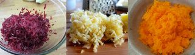
Когда овощи остынут, с помощью ножа очищаем их от кожуры и после по очереди измельчаем. Для этого воспользуемся средней теркой и натрем вначале картофель, затем морковь и в конце свеклу до состояния стружки. Все компоненты переместим из разделочной доски в три свободные тарелки и пока что оставим в покое.
Шаг 2: подготавливаем куриное филе.
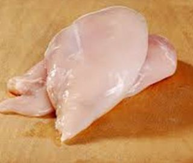
Куриное филе хорошо промываем под проточной теплой водой и после выкладываем на разделочную доску. С помощью ножа очищаем мясо от жил, пленок, хрящей и лишнего жира.
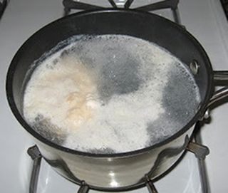
Далее перемещаем компонент в маленькую кастрюлю и полностью заливаем обычной холодной водой. Ставим емкость на средний огонь и доводим до кипения. Внимание: чтобы ускорить процесс, можно прикрыть кастрюлю крышкой. Ближе к этому на поверхности жидкости начнет появляться пена. Обязательно удаляем ее с помощью шумовки. Затем отвариваем курицу на протяжении 30–40 минут. По истечении отведенного времени нужно проверить мясо на степень готовности. Для этого прокалываем его вилкой или острием ножа и смотрим. Если инвентарь с легкостью войдет в мякоть, значит, все готово и можно выключать конфорку. Если же нет, тогда продлеваем время варки еще на 10 минут.
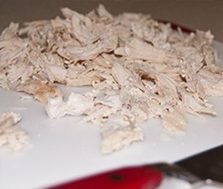
В конце выключаем конфорку, а куриное филе достаем и выкладываем на разделочную доску. Пусть станет теплым. Затем, воспользовавшись ножом, рубим мясо небольшими кусочками и сразу же перемещаем в свободную тарелку.
Шаг 3: подготавливаем яйца.
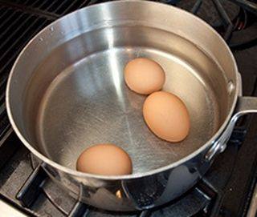
Яйца выкладываем в чистую небольшую кастрюлю и заливаем обычной холодной водой. Внимание: жидкость должна полностью покрывать компоненты. Затем ставим емкость на средний огонь и доводим до кипения. Сразу же после этого засекаем 10 минут и отвариваем яйца вкрутую.
По истечении отведенного времени выключаем конфорку, а кастрюлю с помощью кухонных прихваток берем и переставляем в раковину под струю холодной воды. Компоненты должны полностью остыть, иначе с них будет сложно удалить скорлупу.
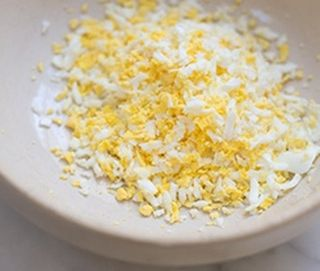
Теперь выкладываем яйца на разделочную доску и измельчаем с помощью ножа кубиками. На самом деле, каким образом мы порубим компоненты, не имеет значения. Поэтому, если у вас есть желание, тогда можно воспользоваться и средней теркой. В любом из вариантов в конце пересыпаем измельченные яйца в чистую тарелку и ненадолго оставляем в стороне.
Шаг 4: подготавливаем грецкие орехи.
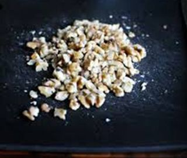
Грецкие орехи выкладываем на разделочную доску и, воспользовавшись ножом, мелко рубим кусочками. Затем пересыпаем измельченный компонент в свободное блюдце.
Шаг 5: подготавливаем чернослив.
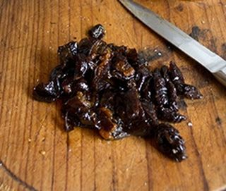
Чернослив тщательно промываем под проточной теплой водой, вытираем кухонными бумажными полотенцами и выкладываем на разделочную доску. С помощью ножа мелко рубим сухофрукты и после перемещаем их в чистое блюдце.
Шаг 6: подготавливаем гранат.
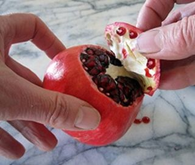
Гранат хорошо промываем под проточной теплой водой, отряхиваем от лишней жидкости и выкладываем на разделочную доску. Чтобы сохранить зерна этого экзотического фрукта в целости и сохранности, проделаем одну интересную процедуру. В первую очередь делаем с помощью ножа неглубокий надрез на кожуре (стараясь не задеть зерна) вокруг граната ближе к той области, где находится плодоножка. Затем с легкостью снимаем верхнюю часть компонента. Со стороны она выглядит как крышечка от какой-то емкости.
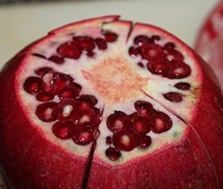
Далее тем же подручным инвентарем делаем надрезы на кожуре (не задевая нежную часть), но уже вдоль плода возле тех мест, где зерна разделены специальной пленочкой. Я повторяю это процедуру где-то 5–6 раз.
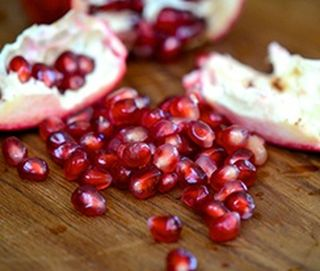
В конце вставляем нож прямо по центру, где нет красных семян, и аккуратно прокручиваем его вокруг своей оси. Гранат сам начнет раскрываться, как цветок. Но можно, конечно, помочь ему чистыми руками.
Вот теперь высыпаем зерна в чистую тарелку, а кожуру с пленками выбрасываем, они нам больше не понадобятся.
Шаг 7: готовим салат.
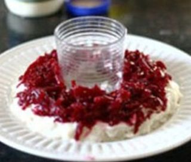
В маленькую миску выкладываем тертую свеклу, высыпаем измельченные грецкие орехи и, воспользовавшись столовой ложкой, тщательно все перемешиваем.
Теперь на плоскую тарелку по центру ставим стакан. Сейчас вокруг него мы будем формировать салат, чтобы по внешнему виду он нам начал напоминать гранатовый браслет. Итак, так как блюдо у нас будет выходить слоями, не забываем каждый уровень смазывать небольшим количеством майонеза, разравнивая его столовой ложкой, а также посыпать небольшим количеством соли и по вкусу молотым черным перцем. В первую очередь выкладываем картофель. Затем, свеклу с орехами. Третьим слоем у нас будет измельченное куриное филе. Далее выкладываем мелко рубленный чернослив. Предпоследним слоем у нас идет морковь, ну и в конце – измельченные яйца. Обязательно промазываем их майонезом и только после начинаем украшать салат зернами граната.
Готовое блюдо ставим в холодильник настояться в течение 2–3 часов. Не советую салат сразу же подавать к обеденному столу, так он хуже пропитывается и слои получаются суховатыми.